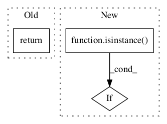

Pattern ID :214
Before Change
self._encoding = encoding
def tag(self, tokens):
return self.batch_tag([tokens])[0]
def batch_tag(self, sentences):
encoding = self._encodingAfter Change
for token in tokens:
assert "\n" not in token, "Tokens should not contain newlines"
if isinstance( token, unicode):
token = token.encode(self._encoding)
self._hunpos.stdin.write(token + "\n")
// We write a final empty line to tell hunpos that the sentence is finished:
self._hunpos.stdin.write("\n")In pattern: SUPERPATTERN
Frequency: 3
Non-data size: 3
Instances Fragment ID: 372912
Project Name: nltk/nltk
Commit Name: 402aaa02060c1ece1f678fa179b38f4f1bff3bf6
Time: 2011-02-01
Author: peter.ljunglof@heatherleaf.se
File Name: nltk/tag/hunpos.py
Class Name: HunposTagger
Method Name: tag
Fragment ID: 372908
Project Name: nltk/nltk
Commit Name: 1b5a0b76f233a337b4675aa5550087c810fe4fea
Time: 2012-05-29
Author: kmike84@gmail.com
File Name: nltk/misc/babelfish.py
Class Name: AnonimousClass
Method Name: translate
Fragment ID: 372911
Project Name: nltk/nltk
Commit Name: 421bc88fae1210652442679d9647e2f867fdfe90
Time: 2012-12-21
Author: peter.ljunglof@heatherleaf.se
File Name: nltk/grammar.py
Class Name: FeatureValueType
Method Name: __lt__